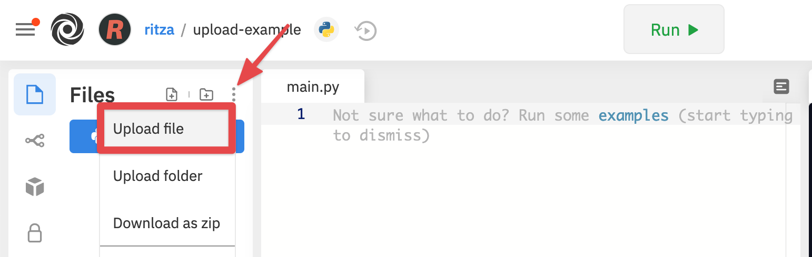
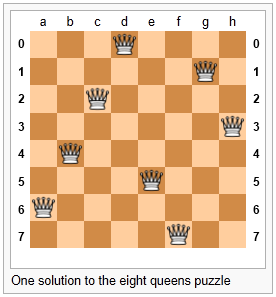

This chapter is a bit different from what we’ve done so far: rather than introduce more new Python syntax and features, we’re going to focus on the program development process, and some algorithms that work with lists.
As in all parts of this book, our expectation is that you, the reader, will copy our code into your Python environment, play and experiment, and work along with us.
Part of this chapter works with the book Alice in Wonderland and a vocabulary file. Download these two files to your local machine at the following links. https://learnpythontherightway.com/_downloads/alice_in_wonderland.txt and https://learnpythontherightway.com/_downloads/vocab.txt.
Early in our Fruitful functions chapter we introduced the idea of incremental development, where we added small fragments of code to slowly build up the whole, so that we could easily find problems early. Later in that same chapter we introduced unit testing and gave code for our testing framework so that we could capture, in code, appropriate tests for the functions we were writing.
Test-driven development (TDD) is a software development practice which takes these practices one step further. The key idea is that automated tests should be written first. This technique is called test-driven because — if we are to believe the extremists — non-testing code should only be written when there is a failing test to make pass.
We can still retain our mode of working in small incremental steps, but now we’ll define and express those steps in terms of a sequence of increasingly sophisticated unit tests that demand more from our code at each stage.
We’ll turn our attention to some standard algorithms that process lists now, but as we proceed through this chapter we’ll attempt to do so in the spirit envisaged by TDD.
We’d like to know the index where a specific item occurs within in a list of items. Specifically, we’ll return the index of the item if it is found, or we’ll return -1 if the item doesn’t occur in the list. Let us start with some tests:
friends = ["Joe", "Zoe", "Brad", "Angelina", "Zuki", "Thandi", "Paris"]
test(search_linear(friends, "Zoe") == 1)
test(search_linear(friends, "Joe") == 0)
test(search_linear(friends, "Paris") == 6)
test(search_linear(friends, "Bill") == -1)Motivated by the fact that our tests don’t even run, let alone pass, we now write the function:
def search_linear(xs, target):
""" Find and return the index of target in sequence xs """
for (i, v) in enumerate(xs):
if v == target:
return i
return -1There are a some points to learn here: We’ve seen a similar algorithm in section 8.10 when we searched for a character in a string. There we used a while loop, here we’ve used a for loop, coupled with enumerate to extract the (i, v) pair on each iteration. There are other variants — for example, we could have used range and made the loop run only over the indexes, or we could have used the idiom of returning None when the item was not found in the list. But the essential similarity in all these variations is that we test every item in the list in turn, from first to last, using the pattern of the short-circuit eureka traversal that we introduced earlier —that we return from the function as soon as we find the target that we’re looking for.
Searching all items of a sequence from first to last is called a linear search. Each time we check whether v == target we’ll call it a probe. We like to count probes as a measure of how efficient our algorithm is, and this will be a good enough indication of how long our algorithm will take to execute.
Linear searching is characterized by the fact that the number of probes needed to find some target depends directly on the length of the list. So if the list becomes ten times bigger, we can expect to wait ten times longer when searching for things. Notice too, that if we’re searching for a target that is not present in the list, we’ll have to go all the way to the end before we can return the negative value. So this case needs N probes, where N is the length of the list. However, if we’re searching for a target that does exist in the list, we could be lucky and find it immediately in position 0, or we might have to look further, perhaps even all the way to the last item. On average, when the target is present, we’re going to need to go about halfway through the list, or N/2 probes.
We say that this search has linear performance (linear meaning straight line) because, if we were to measure the average search times for different sizes of lists (N), and then plot a graph of time-to-search against N, we’d get a more-or-less straight line graph.
Analysis like this is pretty meaningless for small lists — the computer is quick enough not to bother if the list only has a handful of items. So generally, we’re interested in the scalability of our algorithms — how do they perform if we throw bigger problems at them. Would this search be a sensible one to use if we had a million or ten million items (perhaps the catalog of books in your local library) in our list? What happens for really large datasets, e.g. how does Google search so brilliantly well?
As children learn to read, there are expectations that their vocabulary will grow. So a child of age 14 is expected to know more words than a child of age 8. When prescribing reading books for a grade, an important question might be “which words in this book are not in the expected vocabulary at this level?”
Let us assume we can read a vocabulary of words into our program, and read the text of a book, and split it into words. Let us write some tests for what we need to do next. Test data can usually be very small, even if we intend to finally use our program for larger cases:
vocab = ["apple", "boy", "dog", "down",
"fell", "girl", "grass", "the", "tree"]
book_words = "the apple fell from the tree to the grass".split()
test(find_unknown_words(vocab, book_words) == ["from", "to"])
test(find_unknown_words([], book_words) == book_words)
test(find_unknown_words(vocab, ["the", "boy", "fell"]) == [])Notice we were a bit lazy, and used split to create our list of words —it is easier than typing out the list, and very convenient if you want to input a sentence into the program and turn it into a list of words.
We now need to implement the function for which we’ve written tests, and we’ll make use of our linear search. The basic strategy is to run through each of the words in the book, look it up in the vocabulary, and if it is not in the vocabulary, save it into a new resulting list which we return from the function:
def find_unknown_words(vocab, wds):
""" Return a list of words in wds that do not occur in vocab """
result = []
for w in wds:
if (search_linear(vocab, w) < 0):
result.append(w)
return resultWe can happily report now that the tests all pass.
Now let us look at the scalability. We have more realistic vocabulary in the text file that could be downloaded at the beginning of this chapter. Upload the vocab.txt file to a new repl so that you can access it from your code.

Now let us read in the file (as a single string) and split it into a list of words. For convenience, we’ll create a function to do this for us, and test it on the vocab file.
def load_words_from_file(filename):
""" Read words from filename, return list of words. """
f = open(filename, "r")
file_content = f.read()
f.close()
wds = file_content.split()
return wds
bigger_vocab = load_words_from_file("vocab.txt")
print("There are {0} words in the vocab, starting with\n {1} "
.format(len(bigger_vocab), bigger_vocab[:6]))Python responds with:
There are 19469 words in the vocab, starting with
['a', 'aback', 'abacus', 'abandon', 'abandoned', 'abandonment'] So we’ve got a more sensible size vocabulary. Now let us load up a book, once again we’ll use the one we downloaded at the beginning of this chapter. Loading a book is much like loading words from a file, but we’re going to do a little extra black magic. Books are full of punctuation, and have mixtures of lowercase and uppercase letters. We need to clean up the contents of the book. This will involve removing punctuation, and converting everything to the same case (lowercase, because our vocabulary is all in lowercase). So we’ll want a more sophisticated way of converting text to words.
test(text_to_words("My name is Earl!") == ["my", "name", "is", "earl"])
test(text_to_words('"Well, I never!", said Alice.') ==
["well", "i", "never", "said", "alice"])There is a powerful translate method available for strings. The idea is that one sets up desired substitutions — for every character, we can give a corresponding replacement character. The translate method will apply these replacements throughout the whole string. So here we go:
The translation turns all uppercase characters into lowercase, and all punctuation characters and digits into spaces. Then, of course, split will get rid of the spaces as it breaks the text into a list of words. The tests pass.
Now we’re ready to read in our book:
def get_words_in_book(filename):
""" Read a book from filename, and return a list of its words. """
f = open(filename, "r")
content = f.read()
f.close()
wds = text_to_words(content)
return wds
book_words = get_words_in_book("alice_in_wonderland.txt")
print("There are {0} words in the book, the first 100 are\n{1}".
format(len(book_words), book_words[:100]))Python prints the following (all on one line, we’ve cheated a bit for the textbook):
There are 27336 words in the book, the first 100 are
['alice', 's', 'adventures', 'in', 'wonderland', 'lewis', 'carroll',
'chapter', 'i', 'down', 'the', 'rabbit', 'hole', 'alice', 'was',
'beginning', 'to', 'get', 'very', 'tired', 'of', 'sitting', 'by',
'her', 'sister', 'on', 'the', 'bank', 'and', 'of', 'having',
'nothing', 'to', 'do', 'once', 'or', 'twice', 'she', 'had',
'peeped', 'into', 'the', 'book', 'her', 'sister', 'was', 'reading',
'but', 'it', 'had', 'no', 'pictures', 'or', 'conversations', 'in',
'it', 'and', 'what', 'is', 'the', 'use', 'of', 'a', 'book',
'thought', 'alice', 'without', 'pictures', 'or', 'conversation',
'so', 'she', 'was', 'considering', 'in', 'her', 'own', 'mind',
'as', 'well', 'as', 'she', 'could', 'for', 'the', 'hot', 'day',
'made', 'her', 'feel', 'very', 'sleepy', 'and', 'stupid',
'whether', 'the', 'pleasure', 'of', 'making', 'a'] Well now we have all the pieces ready. Let us see what words in this book are not in the vocabulary:
>>> missing_words = find_unknown_words(bigger_vocab, book_words) We wait a considerable time now, something like a minute, before Python finally works its way through this, and prints a list of 3398 words in the book that are not in the vocabulary. Mmm… This is not particularly scaleable. For a vocabulary that is twenty times larger (you’ll often find school dictionaries with 300 000 words, for example), and longer books, this is going to be slow. So let us make some timing measurements while we think about how we can improve this in the next section.
import time
t0 = time.clock()
missing_words = find_unknown_words(bigger_vocab, book_words)
t1 = time.clock()
print("There are {0} unknown words.".format(len(missing_words)))
print("That took {0:.4f} seconds.".format(t1-t0))We get the results and some timing that we can refer back to later:
There are 3398 unknown words.
That took 49.8014 seconds. If you think about what we’ve just done, it is not how we work in real life. If you were given a vocabulary and asked to tell if some word was present, you’d probably start in the middle. You can do this because the vocabulary is ordered — so you can probe some word in the middle, and immediately realize that your target was before (or perhaps after) the one you had probed. Applying this principle repeatedly leads us to a very much better algorithm for searching in a list of items that are already ordered. (Note that if the items are not ordered, you have little choice other than to look through all of them. But, if we know the items are in order, we can improve our searching technique).
Lets start with some tests. Remember, the list needs to be sorted:
xs = [2,3,5,7,11,13,17,23,29,31,37,43,47,53]
test(search_binary(xs, 20) == -1)
test(search_binary(xs, 99) == -1)
test(search_binary(xs, 1) == -1)
for (i, v) in enumerate(xs):
test(search_binary(xs, v) == i)Even our test cases are interesting this time: notice that we start with items not in the list and look at boundary conditions — in the middle of the list, less than all items in the list, bigger than the biggest. Then we use a loop to use every list item as a target, and to confirm that our binary search returns the corresponding index of that item in the list.
It is useful to think about having a region-of-interest (ROI) within the list being searched. This ROI will be the portion of the list in which it is still possible that our target might be found. Our algorithm will start with the ROI set to all the items in the list. On the first probe in the middle of the ROI, there are three possible outcomes: either we find the target, or we learn that we can discard the top half of the ROI, or we learn that we can discard the bottom half of the ROI. And we keep doing this repeatedly, until we find our target, or until we end up with no more items in our region of interest. We can code this as follows:
def search_binary(xs, target):
""" Find and return the index of key in sequence xs """
lb = 0
ub = len(xs)
while True:
if lb == ub: # If region of interest (ROI) becomes empty
return -1
# Next probe should be in the middle of the ROI
mid_index = (lb + ub) // 2
# Fetch the item at that position
item_at_mid = xs[mid_index]
# print("ROI[{0}:{1}](size={2}), probed='{3}', target='{4}'"
# .format(lb, ub, ub-lb, item_at_mid, target))
# How does the probed item compare to the target?
if item_at_mid == target:
return mid_index # Found it!
if item_at_mid < target:
lb = mid_index + 1 # Use upper half of ROI next time
else:
ub = mid_index # Use lower half of ROI next timeThe region of interest is represented by two variables, a lower bound lb and an upper bound ub. It is important to be precise about what values these indexes have. We’ll make lb hold the index of the first item in the ROI, and make ub hold the index just beyond the last item of interest. So these semantics are similar to a Python slice semantics: the region of interest is exactly the slice xs[lb:ub]. (The algorithm never actually takes any array slices!)
With this code in place, our tests pass. Great. Now if we substitute a call to this search algorithm instead of calling the search_linear in find_unknown_words, can we improve our performance? Let’s do that, and again run this test:
t0 = time.clock()
missing_words = find_unknown_words(bigger_vocab, book_words)
t1 = time.clock()
print("There are {0} unknown words.".format(len(missing_words)))
print("That took {0:.4f} seconds.".format(t1-t0))What a spectacular difference! More than 200 times faster!
There are 3398 unknown words.
That took 0.2262 seconds.Why is this binary search so much faster than the linear search? If we uncomment the print statement on lines 15 and 16, we’ll get a trace of the probes done during a search. Let’s go ahead, and try that:
>>> search_binary(bigger_vocab, "magic")
ROI[0:19469](size=19469), probed='known', target='magic'
ROI[9735:19469](size=9734), probed='retailer', target='magic'
ROI[9735:14602](size=4867), probed='overthrow', target='magic'
ROI[9735:12168](size=2433), probed='mission', target='magic'
ROI[9735:10951](size=1216), probed='magnificent', target='magic'
ROI[9735:10343](size=608), probed='liken', target='magic'
ROI[10040:10343](size=303), probed='looks', target='magic'
ROI[10192:10343](size=151), probed='lump', target='magic'
ROI[10268:10343](size=75), probed='machete', target='magic'
ROI[10306:10343](size=37), probed='mafia', target='magic'
ROI[10325:10343](size=18), probed='magnanimous', target='magic'
ROI[10325:10334](size=9), probed='magical', target='magic'
ROI[10325:10329](size=4), probed= maggot', target='magic'
ROI[10328:10329](size=1), probed='magic', target='magic'
10328Here we see that finding the target word “magic” needed just 14 probes before it was found at index 10328. The important thing is that each probe halves (with some truncation) the remaining region of interest. By contrast, the linear search would have needed 10329 probes to find the same target word.
The word binary means two. Binary search gets its name from the fact that each probe splits the list into two pieces and discards the one half from the region of interest.
The beauty of the algorithm is that we could double the size of the vocabulary, and it would only need one more probe! And after another doubling, just another one probe. So as the vocabulary gets bigger, this algorithm’s performance becomes even more impressive.
Can we put a formula to this? If our list size is N, what is the biggest number of probes k we could need? The maths is a bit easier if we turn the question around: how big a list N could we deal with, given that we were only allowed to make k probes?
With 1 probe, we can only search a list of size 1. With two probes we could cope with lists up to size 3 - (test the middle item with the first probe, then test either the left or right sublist with the second probe). With one more probe, we could cope with 7 items (the middle item, and two sublists of size 3). With four probes, we can search 15 items, and 5 probes lets us search up to 31 items. So the general relationship is given by the formula
N = 2 ** k - 1where k is the number of probes we’re allowed to make, and N is the maximum size of the list that can be searched in that many probes. This function is exponential in k (because k occurs in the exponent part). If we wanted to turn the formula around and solve for k in terms of N, we need to move the constant 1 to the other side, and take a log (base 2) on each side. (The log is the inverse of an exponent.) So the formula for k in terms of N is now:
The square-only-on-top brackets are called ceiling brackets: this means that you must round the number up to the next whole integer.
Let us try this on a calculator, or in Python, which is the mother of all calculators: suppose I have 1000 elements to be searched, what is the maximum number of probes I’ll need? (There is a pesky +1 in the formula, so let us not forget to add it on…):
>>> from math import log
>>> log(1000 + 1, 2)
9.967226258835993Telling us that we’ll need 9.96 probes maximum, to search 1000 items is not quite what we want. We forgot to take the ceiling. The ceil function in the math module does exactly this. So more accurately, now:
>>> from math import log, ceil
>>> ceil(log(1000 + 1, 2))
10
>>> ceil(log(1000000 + 1, 2))
20
>>> ceil(log(1000000000 + 1, 2))
30 This tells us that searching 1000 items needs 10 probes. (Well technically, with 10 probes we can search exactly 1023 items, but the easy and useful stuff to remember here is that “1000 items needs 10 probes, a million needs 20 probes, and a billion items only needs 30 probes”).
You will rarely encounter algorithms that scale to large datasets as beautifully as binary search does!
We often want to get the unique elements in a list, i.e. produce a new list in which each different element occurs just once. Consider our case of looking for words in Alice in Wonderland that are not in our vocabulary. We had a report that there are 3398 such words, but there are duplicates in that list. In fact, the word “alice” occurs 398 times in the book, and it is not in our vocabulary! How should we remove these duplicates?
A good approach is to sort the list, then remove all adjacent duplicates. Let us start with removing adjacent duplicates
test(remove_adjacent_dups([1,2,3,3,3,3,5,6,9,9]) == [1,2,3,5,6,9])
test(remove_adjacent_dups([]) == [])
test(remove_adjacent_dups(["a", "big", "big", "bite", "dog"]) ==
["a", "big", "bite", "dog"])The algorithm is easy and efficient. We simply have to remember the most recent item that was inserted into the result, and avoid inserting it again:
def remove_adjacent_dups(xs):
""" Return a new list in which all adjacent
duplicates from xs have been removed.
"""
result = []
most_recent_elem = None
for e in xs:
if e != most_recent_elem:
result.append(e)
most_recent_elem = e
return resultThe amount of work done in this algorithm is linear — each item in xs causes the loop to execute exactly once, and there are no nested loops. So doubling the number of elements in xs should cause this function to run twice as long: the relationship between the size of the list and the time to run will be graphed as a straight (linear) line.
Let us go back now to our analysis of Alice in Wonderland. Before checking the words in the book against the vocabulary, we’ll sort those words into order, and eliminate duplicates. So our new code looks like this:
all_words = get_words_in_book("alice_in_wonderland.txt")
all_words.sort()
book_words = remove_adjacent_dups(all_words)
print("There are {0} words in the book. Only {1} are unique.".
format(len(all_words), len(book_words)))
print("The first 100 words are\n{0}".
format(book_words[:100]))Almost magically, we get the following output:
There are 27336 words in the book. Only 2570 are unique.
The first 100 words are
['_i_', 'a', 'abide', 'able', 'about', 'above', 'absence', 'absurd',
'acceptance', 'accident', 'accidentally', 'account', 'accounting',
'accounts', 'accusation', 'accustomed', 'ache', 'across', 'act',
'actually', 'ada', 'added', 'adding', 'addressed', 'addressing',
'adjourn', 'adoption', 'advance', 'advantage', 'adventures',
'advice', 'advisable', 'advise', 'affair', 'affectionately',
'afford', 'afore', 'afraid', 'after', 'afterwards', 'again',
'against', 'age', 'ago', 'agony', 'agree', 'ah', 'ahem', 'air',
'airs', 'alarm', 'alarmed', 'alas', 'alice', 'alive', 'all',
'allow', 'almost', 'alone', 'along', 'aloud', 'already', 'also',
'altered', 'alternately', 'altogether', 'always', 'am', 'ambition',
'among', 'an', 'ancient', 'and', 'anger', 'angrily', 'angry',
'animal', 'animals', 'ann', 'annoy', 'annoyed', 'another',
'answer', 'answered', 'answers', 'antipathies', 'anxious',
'anxiously', 'any', 'anything', 'anywhere', 'appealed', 'appear',
'appearance', 'appeared', 'appearing', 'applause', 'apple',
'apples', 'arch']Lewis Carroll was able to write a classic piece of literature using only 2570 different words!
Suppose we have two sorted lists. Devise an algorithm to merge them together into a single sorted list.
A simple but inefficient algorithm could be to simply append the two lists together, and sort the result:
newlist = (xs + ys)
newlist.sort()But this doesn’t take advantage of the fact that the two lists are already sorted, and is going to have poor scalability and performance for very large lists.
Lets get some tests together first:
xs = [1,3,5,7,9,11,13,15,17,19]
ys = [4,8,12,16,20,24]
zs = xs+ys
zs.sort()
test(merge(xs, []) == xs)
test(merge([], ys) == ys)
test(merge([], []) == [])
test(merge(xs, ys) == zs)
test(merge([1,2,3], [3,4,5]) == [1,2,3,3,4,5])
test(merge(["a", "big", "cat"], ["big", "bite", "dog"]) ==
["a", "big", "big", "bite", "cat", "dog"])Here is our merge algorithm:
def merge(xs, ys):
""" merge sorted lists xs and ys. Return a sorted result """
result = []
xi = 0
yi = 0
while True:
if xi >= len(xs): # If xs list is finished,
result.extend(ys[yi:]) # Add remaining items from ys
return result # And we're done.
if yi >= len(ys): # Same again, but swap roles
result.extend(xs[xi:])
return result
# Both lists still have items, copy smaller item to result.
if xs[xi] <= ys[yi]:
result.append(xs[xi])
xi += 1
else:
result.append(ys[yi])
yi += 1The algorithm works as follows: we create a result list, and keep two indexes, one into each list (lines 3-5). On each iteration of the loop, whichever list item is smaller is copied to the result list, and that list’s index is advanced. As soon as either index reaches the end of its list, we copy all the remaining items from the other list into the result, which we return.
Underlying the algorithm for merging sorted lists is a deep pattern of computation that is widely reusable. The pattern essence is “Run through the lists always processing the smallest remaining items from each, with these cases to consider:”
Lets assume we have two sorted lists. Exercise your algorithmic skills by adapting the merging algorithm pattern for each of these cases:
bagdiff([5,7,11,11,11,12,13], [7,8,11]) would return [5,11,11,12,13]In the previous section we sorted the words from the book, and eliminated duplicates. Our vocabulary is also sorted. So third case above — find all items in the second list that are not in the first list, would be another way to implement find_unknown_words. Instead of searching for every word in the dictionary (either by linear or binary search), why not use a variant of the merge to return the words that occur in the book, but not in the vocabulary.
def find_unknowns_merge_pattern(vocab, wds):
""" Both the vocab and wds must be sorted. Return a new
list of words from wds that do not occur in vocab.
"""
result = []
xi = 0
yi = 0
while True:
if xi >= len(vocab):
result.extend(wds[yi:])
return result
if yi >= len(wds):
return result
if vocab[xi] == wds[yi]: # Good, word exists in vocab
yi += 1
elif vocab[xi] < wds[yi]: # Move past this vocab word,
xi += 1
else: # Got word that is not in vocab
result.append(wds[yi])
yi += 1Now we put it all together:
Even more stunning performance here:
There are 828 unknown words.
That took 0.0410 seconds. Let’s review what we’ve done. We started with a word-by-word linear lookup in the vocabulary that ran in about 50 seconds. We implemented a clever binary search, and got that down to 0.22 seconds, more than 200 times faster. But then we did something even better: we sorted the words from the book, eliminated duplicates, and used a merging pattern to find words from the book that were not in the dictionary. This was about five times faster than even the binary lookup algorithm. At the end of the chapter our algorithm is more than a 1000 times faster than our first attempt!
That is what we can call a good day at the office!
As told by Wikipedia, “The eight queens puzzle is the problem of placing eight chess queens on an 8x8 chessboard so that no two queens attack each other. Thus, a solution requires that no two queens share the same row, column, or diagonal.”

Please try this yourself, and find a few more solutions by hand.
We’d like to write a program to find solutions to this puzzle. In fact, the puzzle generalizes to placing N queens on an NxN board, so we’re going to think about the general case, not just the 8x8 case. Perhaps we can find solutions for 12 queens on a 12x12 board, or 20 queens on a 20x20 board.
How do we approach a complex problem like this? A good starting point is to think about our data structures — how exactly do we plan to represent the state of the chessboard and its queens in our program? Once we have some handle on what our puzzle is going to look like in memory, we can begin to think about the functions and logic we’ll need to solve the puzzle, i.e. how do we put another queen onto the board somewhere, and to check whether it clashes with any of the queens already on the board.
The steps of finding a good representation, and then finding a good algorithm to operate on the data cannot always be done independently of each other. As you think about the operations you require, you may want to change or reorganize the data somewhat to make it easier to do the operations you need.
This relationship between algorithms and data was elegantly expressed in the title of a book Algorithms + Data Structures = Programs, written by one of the pioneers in Computer Science, Niklaus Wirth, the inventor of Pascal.
Let’s brainstorm some ideas about how a chessboard and queens could be represented in memory.
A two dimensional matrix (a list of 8 lists, each containing 8 squares) is one possibility. At each square of the board would like to know whether it contains a queen or not — just two possible states for each square — so perhaps each element in the lists could be True or False, or, more simply, 0 or 1.
Our state for the solution above could then have this data representation:
bd1 = [[0,0,0,1,0,0,0,0],
[0,0,0,0,0,0,1,0],
[0,0,1,0,0,0,0,0],
[0,0,0,0,0,0,0,1],
[0,1,0,0,0,0,0,0],
[0,0,0,0,1,0,0,0],
[1,0,0,0,0,0,0,0],
[0,0,0,0,0,1,0,0]]You should also be able to see how the empty board would be represented, and you should start to imagine what operations or changes you’d need to make to the data to place another queen somewhere on the board.
Another idea might be to keep a list of coordinates of where the queens are. Using the notation in the illustration, for example, we could represent the state of that solution as:
bd2 = [ "a6", "b4", "c2", "d0", "e5", "f7", "g1", "h3" ]We could make other tweaks to this — perhaps each element in this list should rather be a tuple, with integer coordinates for both axes. And being good computer scientists, we’d probably start numbering each axis from 0 instead of at 1. Now our representation could be:
bd3 = [(0,6), (1,4), (2,2), (3,0), (4,5), (5,7), (6,1), (7,3)]Looking at this representation, we can’t help but notice that the first coordinates are 0,1,2,3,4,5,6,7 and they correspond exactly to the index position of the pairs in the list. So we could discard them, and come up with this really compact alternative representation of the solution:
bd4 = [6, 4, 2, 0, 5, 7, 1, 3]This will be what we’ll use, let’s see where that takes us.
Let us now take some grand insight into the problem. Do you think it is a coincidence that there are no repeated numbers in the solution? The solution [6,4,2,0,5,7,1,3] contains the numbers 0,1,2,3,4,5,6,7, but none are duplicated! Could other solutions contain duplicate numbers, or not?
A little thinking should convince you that there can never be duplicate numbers in a solution: the numbers represent the row on which the queen is placed, and because we are never permitted to put two queens in the same row, no solution will ever have duplicate row numbers in it.
Our key insight
In our representation, any solution to the N queens problem musttherefore be a permutation of the numbers [0 .. N-1].
Note that not all permutations are solutions. For example, [0,1,2,3,4,5,6,7] has all queens on the same diagonal.
Wow, we seem to be making progress on this problem merely by thinking, rather than coding!
Our algorithm should start taking shape now. We can start with the list [0..N-1], generate various permutations of that list, and check each permutation to see if it has any clashes (queens that are on the same diagonal). If it has no clashes, it is a solution, and we can print it.
Let us be precise and clear on this issue: if we only use permutations of the rows, and we’re using our compact representation, no queens can clash on either rows or columns, and we don’t even have to concern ourselves with those cases. So the only clashes we need to test for are clashes on the diagonals.
It sounds like a useful function will be one that can test if two queens share a diagonal. Each queen is on some (x,y) position. So does the queen at (5,2) share a diagonal with the one at (2,0)? Does (5,2) clash with (3,0)?
test(not share_diagonal(5,2,2,0))
test(share_diagonal(5,2,3,0))
test(share_diagonal(5,2,4,3))
test(share_diagonal(5,2,4,1))A little geometry will help us here. A diagonal has a slope of either 1 or -1. The question we really want to ask is is their distance between them the same in the x and the y direction? If it is, they share a diagonal. Because diagonals can be to the left or right, it will make sense for this program to use the absolute distance in each direction:
def share_diagonal(x0, y0, x1, y1):
""" Is (x0, y0) on a shared diagonal with (x1, y1)? """
dy = abs(y1 - y0) # Calc the absolute y distance
dx = abs(x1 - x0) # CXalc the absolute x distance
return dx == dy # They clash if dx == dyIf you copy the code and run it, you’ll be happy to learn that the tests pass!
Now let’s consider how we construct a solution by hand. We’ll put a queen somewhere in the first column, then place one in the second column, only if it does not clash with the one already on the board. And then we’ll put a third one on, checking it against the two queens already to its left. When we consider the queen on column 6, we’ll need to check for clashes against those in all the columns to its left, i.e. in columns 0,1,2,3,4,5.
So the next building block is a function that, given a partially completed puzzle, can check whether the queen at column c clashes with any of the queens to its left, at columns 0,1,2,..c-1:
# Solutions cases that should not have any clashes
test(not col_clashes([6,4,2,0,5], 4))
test(not col_clashes([6,4,2,0,5,7,1,3], 7))
# More test cases that should mostly clash
test(col_clashes([0,1], 1))
test(col_clashes([5,6], 1))
test(col_clashes([6,5], 1))
test(col_clashes([0,6,4,3], 3))
test(col_clashes([5,0,7], 2))
test(not col_clashes([2,0,1,3], 1))
test(col_clashes([2,0,1,3], 2)) Here is our function that makes them all pass:
def col_clashes(bs, c):
""" Return True if the queen at column c clashes
with any queen to its left.
"""
for i in range(c): # Look at all columns to the left of c
if share_diagonal(i, bs[i], c, bs[c]):
return True
return False # No clashes - col c has a safe placement.Finally, we’re going to give our program one of our permutations — i.e. all queens placed somewhere, one on each row, one on each column. But does the permutation have any diagonal clashes?
test(not has_clashes([6,4,2,0,5,7,1,3])) # Solution from above
test(has_clashes([4,6,2,0,5,7,1,3])) # Swap rows of first two
test(has_clashes([0,1,2,3])) # Try small 4x4 board
test(not has_clashes([2,0,3,1])) # Solution to 4x4 caseAnd the code to make the tests pass:
def has_clashes(the_board):
""" Determine whether we have any queens clashing on the diagonals.
We're assuming here that the_board is a permutation of column
numbers, so we're not explicitly checking row or column clashes.
"""
for col in range(1,len(the_board)):
if col_clashes(the_board, col):
return True
return FalseSummary of what we’ve done so far: we now have a powerful function called has_clashes that can tell if a configuration is a solution to the queens puzzle. Let’s get on now with generating lots of permutations and finding solutions!
This is the fun, easy part. We could try to find all permutations of [0,1,2,3,4,5,6,7] — that might be algorithmically challenging, and would be a brute force way of tackling the problem. We just try everything, and find all possible solutions.
Of course we know there are N! permutations of N things, so we can get an early idea of how long it would take to search all of them for all solutions. Not too long at all, actually -8! is only 40320 different cases to check out. This is vastly better than starting with 64 places to put eight queens. If you do the sums for how many ways can you choose 8 of the 64 squares for your queens, the formula (called N choose k where you’re choosing k=8 squares of the available N=64) yields a whopping 4426165368, obtained from (64! / (8! x 56!)).
So our earlier key insight — that we only need to consider permutations — has reduced what we call the problem space from about 4.4 billion cases to just 40320!
We’re not even going to explore all those, however. When we introduced the random number module, we learned that it had a shuffle method that randomly permuted a list of items. So we’re going to write a “random” algorithm to find solutions to the N queens problem. We’ll begin with the permutation [0,1,2,3,4,5,6,7] and we’ll repeatedly shuffle the list, and test each to see if it works! Along the way we’ll count how many attempts we need before we find each solution, and we’ll find 10 solutions (we could hit the same solution more than once, because shuffle is random!):
def main():
import random
rng = random.Random() # Instantiate a generator
bd = list(range(8)) # Generate the initial permutation
num_found = 0
tries = 0
while num_found < 10:
rng.shuffle(bd)
tries += 1
if not has_clashes(bd):
print("Found solution {0} in {1} tries.".format(bd, tries))
tries = 0
num_found += 1
main()Almost magically, and at great speed, we get this:
Found solution [3, 6, 2, 7, 1, 4, 0, 5] in 693 tries.
Found solution [5, 7, 1, 3, 0, 6, 4, 2] in 82 tries.
Found solution [3, 0, 4, 7, 1, 6, 2, 5] in 747 tries.
Found solution [1, 6, 4, 7, 0, 3, 5, 2] in 428 tries.
Found solution [6, 1, 3, 0, 7, 4, 2, 5] in 376 tries.
Found solution [3, 0, 4, 7, 5, 2, 6, 1] in 204 tries.
Found solution [4, 1, 7, 0, 3, 6, 2, 5] in 98 tries.
Found solution [3, 5, 0, 4, 1, 7, 2, 6] in 64 tries.
Found solution [5, 1, 6, 0, 3, 7, 4, 2] in 177 tries.
Found solution [1, 6, 2, 5, 7, 4, 0, 3] in 478 tries.Here is an interesting fact. On an 8x8 board, there are known to be 92 different solutions to this puzzle. We are randomly picking one of 40320 possible permutations of our representation. So our chances of picking a solution on each try are 92/40320. Put another way, on average we’ll need 40320/92 tries — about 438.26 — before we stumble across a solution. The number of tries we printed looks like our experimental data agrees quite nicely with our theory!
Save this code for later.
In the chapter on PyGame we plan to write a module to draw the board with its queens, and integrate that module with this code.
binary search
A famous algorithm that searches for a target in a sorted list. Each
probe in the list allows us to discard half the remaining items, so the
algorithm is very efficient.
linear
Relating to a straight line. Here, we talk about graphing how the time
taken by an algorithm depends on the size of the data it is processing.
Linear algorithms have straight-line graphs that can describe this
relationship.
linear search
A search that probes each item in a list or sequence, from first, until
it finds what it is looking for. It is used for searching for a target
in unordered lists of items.
Merge algorithm
An efficient algorithm that merges two already sorted lists, to produce
a sorted list result. The merge algorithm is really a pattern of
computation that can be adapted and reused for various other scenarios,
such as finding words that are in a book, but not in a vocabulary.
probe
Each time we take a look when searching for an item is called a probe.
In our chapter on <span class="title-ref">Iteration</span> we also
played a guessing game where the computer tried to guess the user's
secret number. Each of those tries would also be called a probe.
test-driven development (TDD)
A software development practice which arrives at a desired feature
through a series of small, iterative steps motivated by automated tests
which are *written first* that express increasing refinements of the
desired feature. (see the Wikipedia article on [Test-driven
development](http://en.wikipedia.org/wiki/Test_driven_development) for
more information.)The section in this chapter called Alice in Wonderland, again started with the observation that the merge algorithm uses a pattern that can be reused in other situations. Adapt the merge algorithm to write each of these functions, as was suggested there:
bagdiff([5,7,11,11,11,12,13], [7,8,11]) would return [5,11,11,12,13]Modify the queens program to solve some boards of size 4, 12, and 16. What is the maximum size puzzle you can usually solve in under a minute?
Adapt the queens program so that we keep a list of solutions that have already printed, so that we don’t print the same solution more than once.
Chess boards are symmetric: if we have a solution to the queens problem, its mirror solution — either flipping the board on the X or in the Y axis, is also a solution. And giving the board a 90 degree, 180 degree, or 270 degree rotation is also a solution. In some sense, solutions that are just mirror images or rotations of other solutions — in the same family —are less interesting than the unique “core cases”. Of the 92 solutions for the 8 queens problem, there are only 12 unique families if you take rotations and mirror images into account. Wikipedia has some fascinating stuff about this.
Write a function to mirror a solution in the Y axis,
Write a function to mirror a solution in the X axis,
Write a function to rotate a solution by 90 degrees anti-clockwise, and use this to provide 180 and 270 degree rotations too.
Write a function which is given a solution, and it generates the family of symmetries for that solution. For example, the symmetries of [0,4,7,5,2,6,1,3] are :
[[0,4,7,5,2,6,1,3],[7,1,3,0,6,4,2,5],
[4,6,1,5,2,0,3,7],[2,5,3,1,7,4,6,0],
[3,1,6,2,5,7,4,0],[0,6,4,7,1,3,5,2],
[7,3,0,2,5,1,6,4],[5,2,4,6,0,3,1,7]] Now adapt the queens program so it won’t list solutions that are in the same family. It only prints solutions from unique families.
Every week a computer scientist buys four lotto tickets. She always chooses the same prime numbers, with the hope that if she ever hits the jackpot, she will be able to go onto TV and Facebook and tell everyone her secret. This will suddenly create widespread public interest in prime numbers, and will be the trigger event that ushers in a new age of enlightenment. She represents her weekly tickets in Python as a list of lists:
my_tickets = [ [ 7, 17, 37, 19, 23, 43],
[ 7, 2, 13, 41, 31, 43],
[ 2, 5, 7, 11, 13, 17],
[13, 17, 37, 19, 23, 43] ]Complete these exercises.
Each lotto draw takes six random balls, numbered from 1 to 49. Write a function to return a lotto draw.
Write a function that compares a single ticket and a draw, and returns the number of correct picks on that ticket:
test(lotto_match([42,4,7,11,1,13], [2,5,7,11,13,17]) == 3)Write a function that takes a list of tickets and a draw, and returns a list telling how many picks were correct on each ticket:
test(lotto_matches([42,4,7,11,1,13], my_tickets) == [1,2,3,1])Write a function that takes a list of integers, and returns the number of primes in the list:
test(primes_in([42, 4, 7, 11, 1, 13]) == 3)Write a function to discover whether the computer scientist has missed any prime numbers in her selection of the four tickets. Return a list of all primes that she has missed:
test(prime_misses(my_tickets) == [3, 29, 47])Write a function that repeatedly makes a new draw, and compares the draw to the four tickets.
Notice that we have difficulty constructing test cases here, because our random numbers are not deterministic. Automated testing only really works if you already know what the answer should be!
Read Alice in Wonderland. You can read the plain text version we have with this textbook, or if you
have e-book reader software on your PC, or a Kindle, iPhone, Android, etc. you’ll be able to find a suitable version for your device at http://www.gutenberg.org. They also have html and pdf versions, with pictures, and thousands of other classic books!